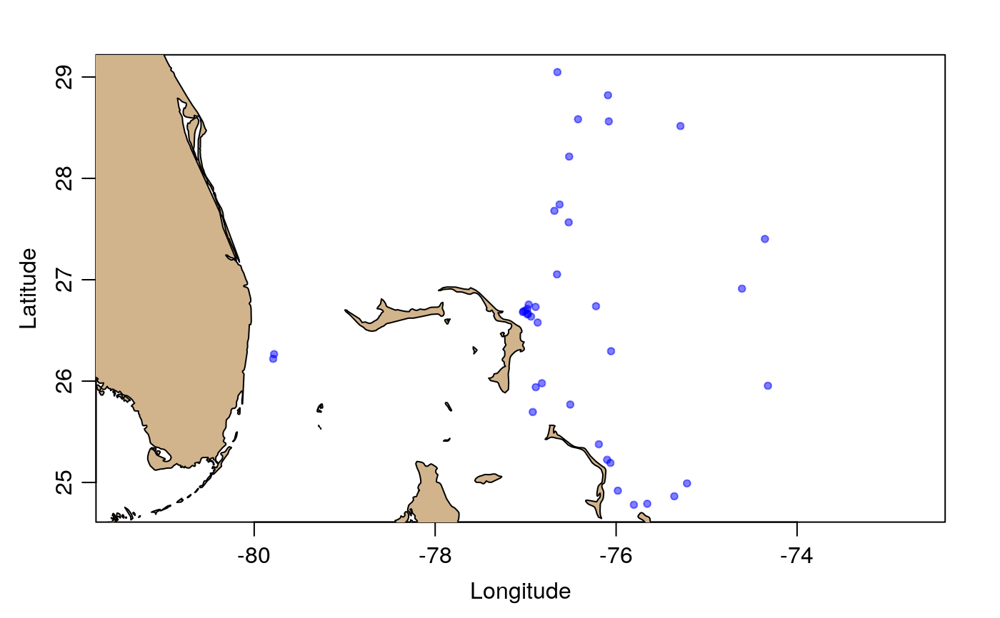

This is created by subsetting a global index to the 39 BGC Argo profiles that were within a 300km radius of Marsh Harbour, Abaco Island, Bahamas, as of 2020 March 23, using the following code.
library(argoFloats) indexAll <- getIndex(file="bgc") indexBgc <- subset(indexAll, circle=list(longitude=-77.06, latitude=26.54, radius=300)) save(indexBgc, file="indexBgc.rda") tools::resaveRdaFiles('indexBgc.rda')
Other datasets provided with argoFloats:
indexMerged,
index
summary(indexBgc)#> argoFloats summary #> ------------------ #> #> * type: index #> * server: ftp://usgodae.org/pub/outgoing/argo #> * file: argo_bio-profile_index.txt.gz #> * url: ftp://usgodae.org/pub/outgoing/argo/argo_bio-profile_index.txt.gz #> * ftpRoot: ftp://ftp.ifremer.fr/ifremer/argo/dac #> * destfileRda: ~/data/argo/argo_bio-profile_index.txt.gz #> * header: #> # Title : Bio-Profile directory file of the Argo Global Data Assembly Center' #> # Description : The directory file describes all individual bio-profile files of the argo GDAC ftp site.' #> # Project : ARGO' #> # Format version : 2.1' #> # Date of update : 20200323114605' #> # FTP root number 1 : ftp://ftp.ifremer.fr/ifremer/argo/dac' #> # FTP root number 2 : ftp://usgodae.org/pub/outgoing/argo/dac' #> # GDAC node : NRL-MRY' #> * index (each holding 39 elements): #> file: aoml/4900845/profiles/BR4900845_086.nc, aoml/4900845/profiles/BR4900845_087.nc, aoml/4900845/profiles/BR4900845_088.nc, ... #> date: 2008-09-03 08:37:38, 2008-09-08 08:41:24, 2008-09-18 08:35:06, ... #> latitude: 26.739, 26.295, 25.769, ... #> longitude: -76.222, -76.056, -76.507, ... #> ocean: A, A, A, ... #> profiler_type: 851, 851, 851, ... #> institution: AO, AO, AO, ... #> parameters: PRES DOXY, PRES DOXY, PRES DOXY, ... #> param_data_mode: RR, RR, RR, ... #> date_update: 2018-05-18 15:23:42, 2018-05-18 15:23:43, 2018-05-18 15:23:43, ... #> * Processing Log #> - 2020-03-23 13:13:32 UTC: `create 'argoFloats' object`#> [1] "PRES DOXY" #> [2] "PRES RAW_DOWNWELLING_IRRADIANCE380 RAW_DOWNWELLING_IRRADIANCE412 RAW_DOWNWELLING_IRRADIANCE490 RAW_DOWNWELLING_PAR DOWN_IRRADIANCE380 DOWN_IRRADIANCE412 DOWN_IRRADIANCE490 DOWNWELLING_PAR FLUORESCENCE_CHLA BETA_BACKSCATTERING700 FLUORESCENCE_CDOM CHLA BBP700 CDOM" #> [3] "PRES BPHASE_DOXY DOXY TEMP_DOXY"